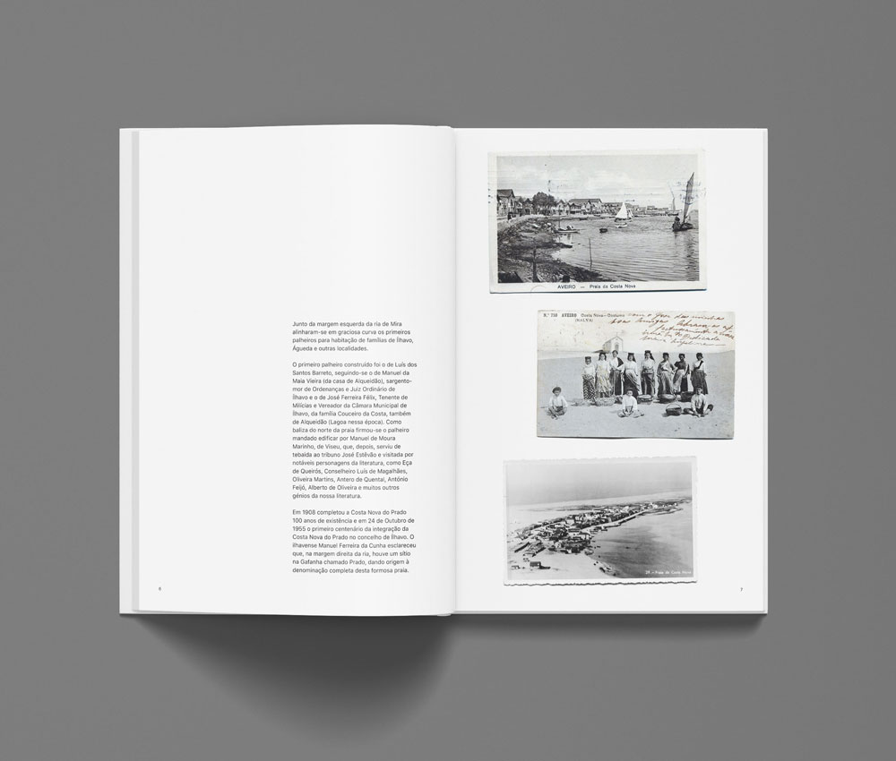
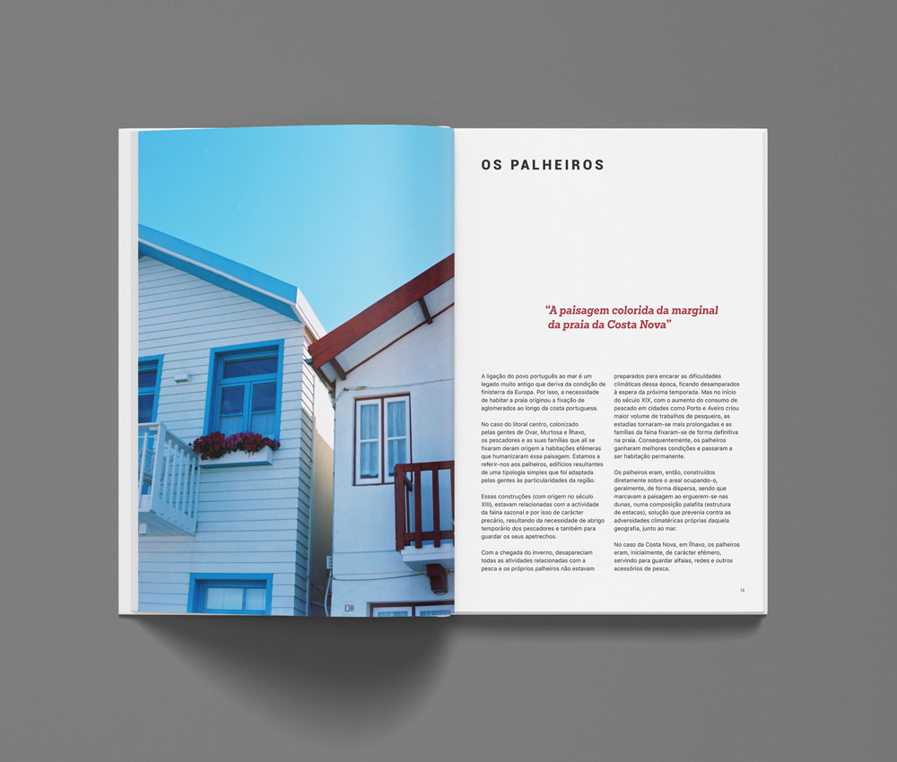
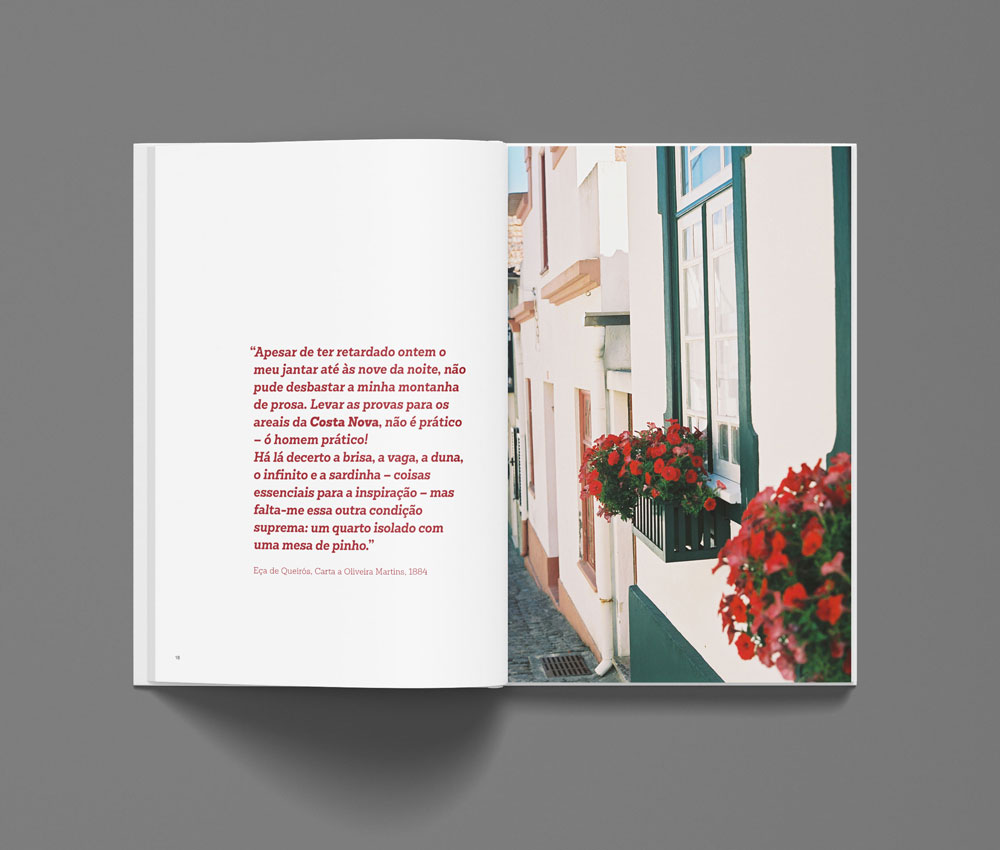
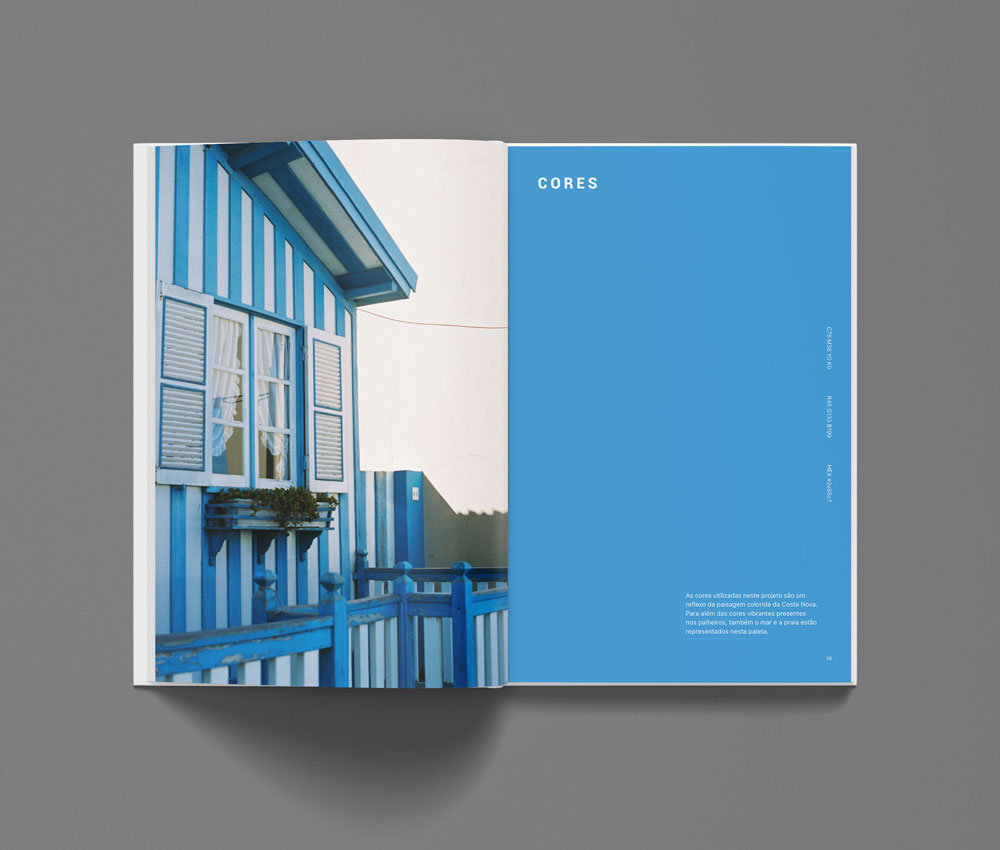
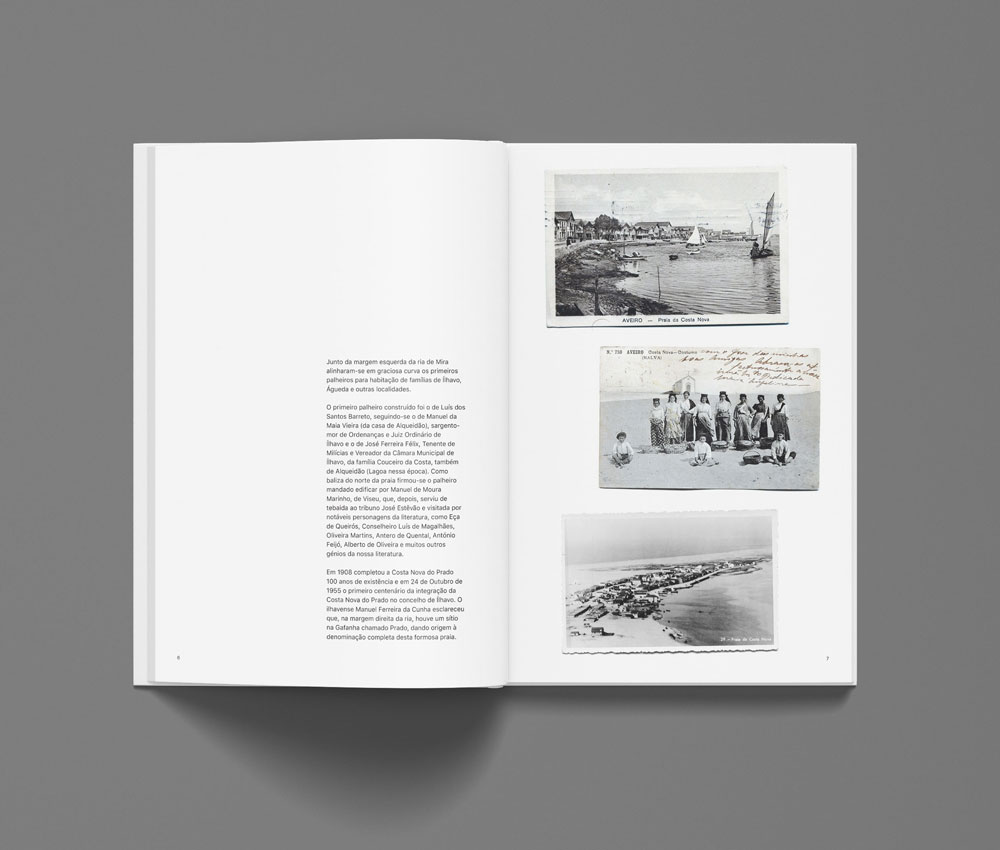
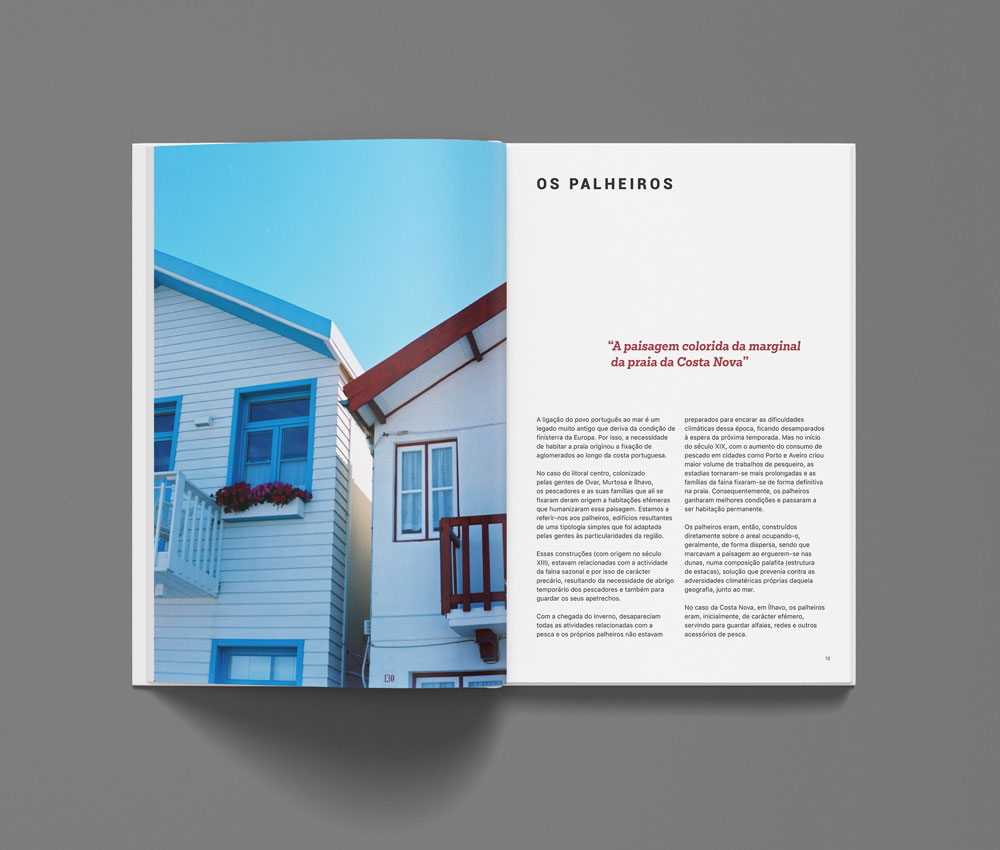
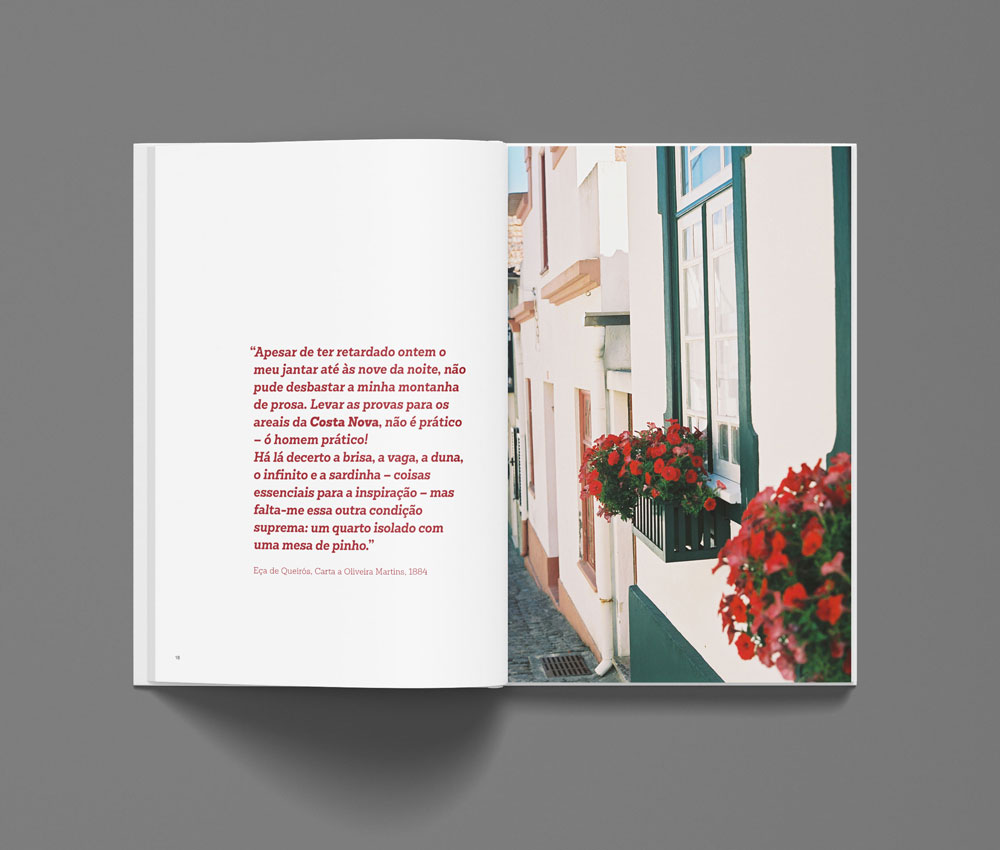
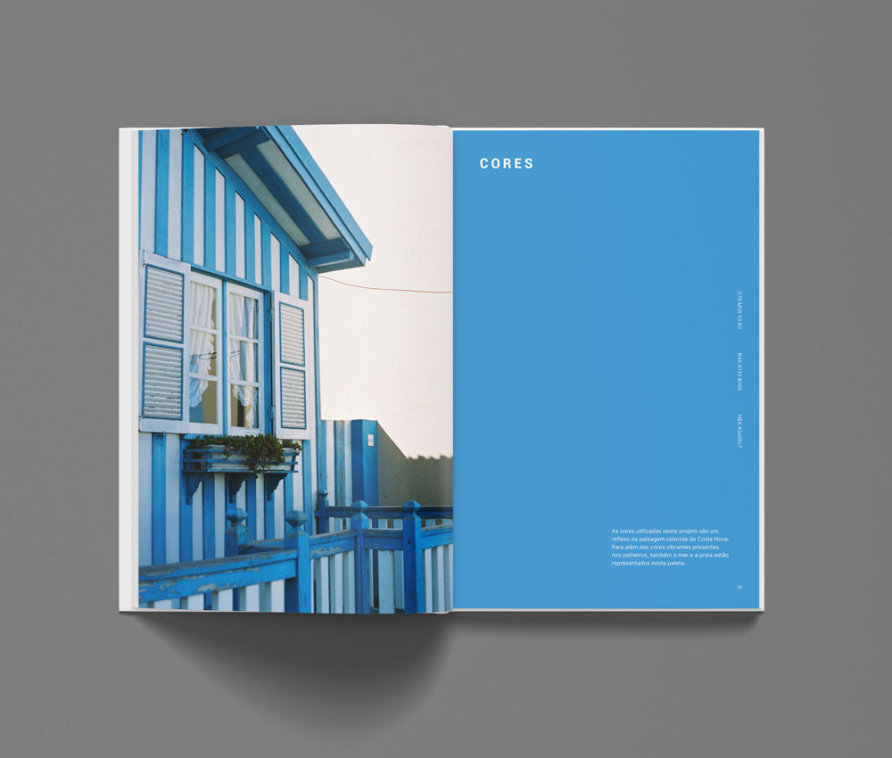
personal project
Retrospective of what are considered to be some of the best and most influencial films from the past decade (and some personal favorites).
personal project
Reflection on the coming-of-age genre and how the transition from childhood to adulthood has been portrayed on film.
personal project
A portrayal of love, yearning and intimacy in LGBT+ relationships told through film.
personal project
A love letter to my mother and a reflection on how the complexity of motherhood is portrayed on film.
personal project
Color studies through a collection of short videos originally made for my Instagram page.
class project
Short animation following a mysterious object through an assembly line and the funky machines that interact with it along the way. Made in collaboration with Elisa Sampaio, José Souto and Maria Sousa.
class project
Made with online footage and narrated by my brother and his girlfriend, this project illustrates the story of how they moved in together amid the COVID-19 pandemic and how their relationship has developed because of it.
class project
Sound design of a scene from the movie “La délicatesse” taken out of context and using sounds available online. The first version is meant to be as realistic as possible, while the second one is meant to evoke more emotion.
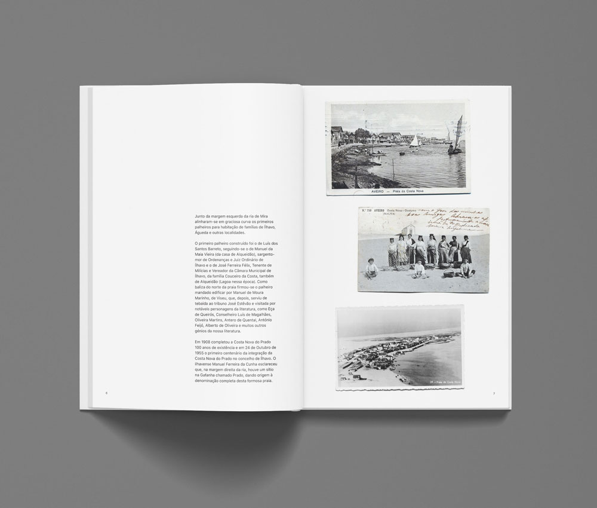
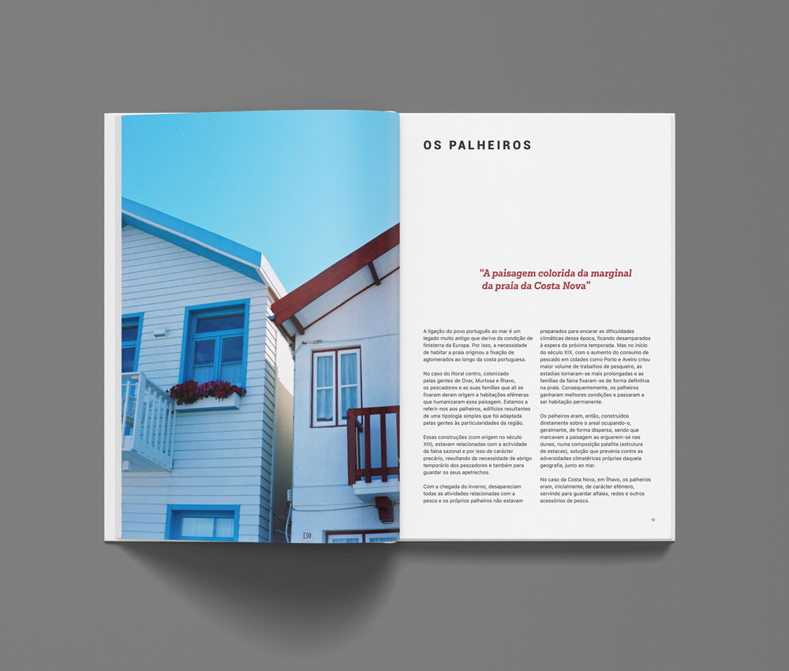
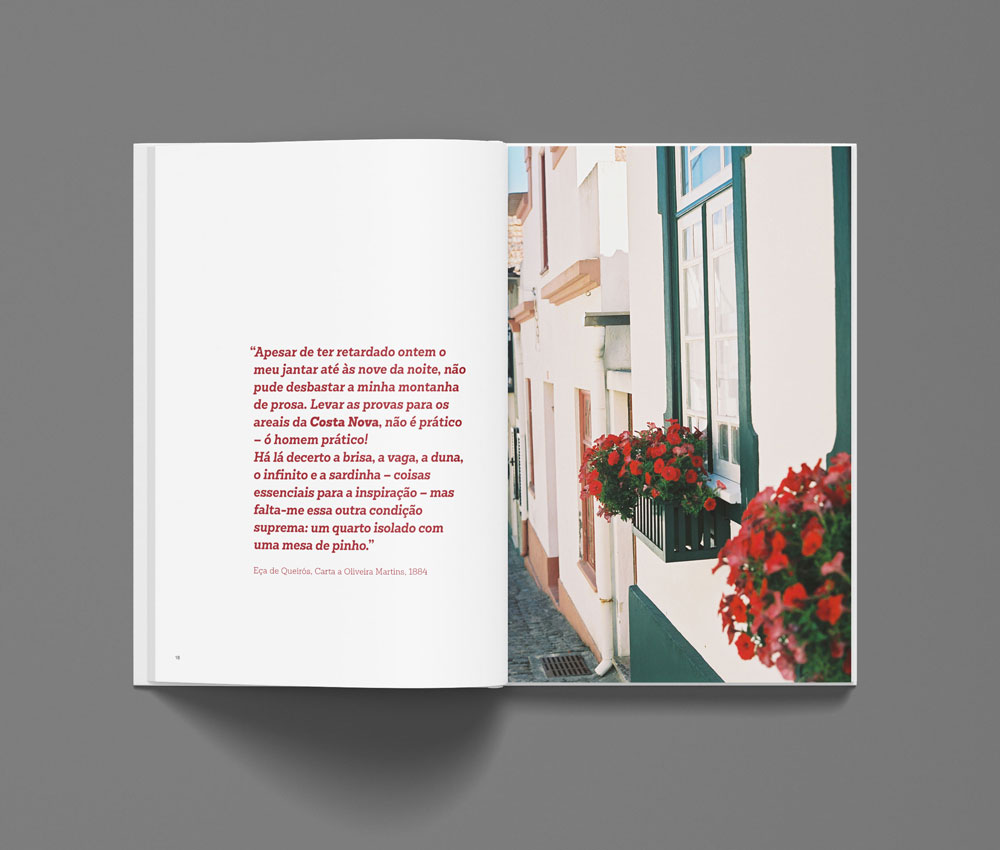
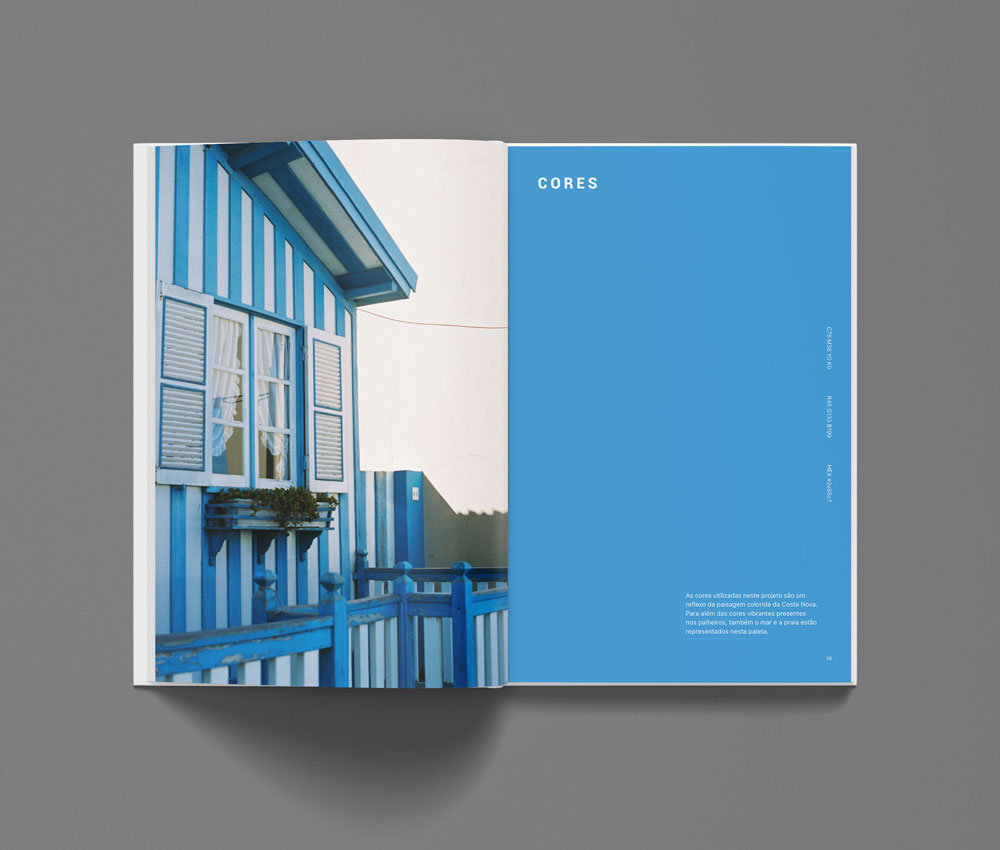
Rita Faria is currently studying Communication Design at the Faculty of Fine Arts of the University of Porto (FBAUP).
She has lived in Gaia and Porto her whole life, but if you ask her for directions she will not be able to help you at all.
She's passionate about movies and music, and has recently discovered her love for film photography.
She knows her way around Premiere Pro, Photoshop, Illustrator and InDesign. She's very open to learn After Effects, Audition, DaVinci Resolve and others.
You might be wondering why she’s talking about herself in the third person...
She doesn’t know either. She is very sleep deprived.